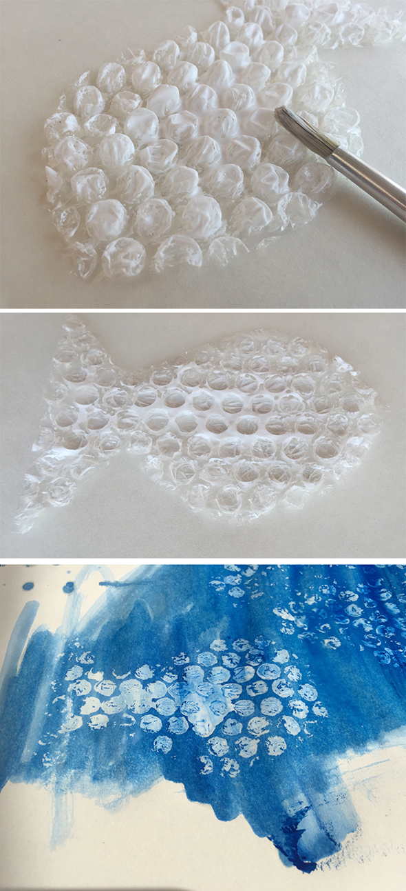
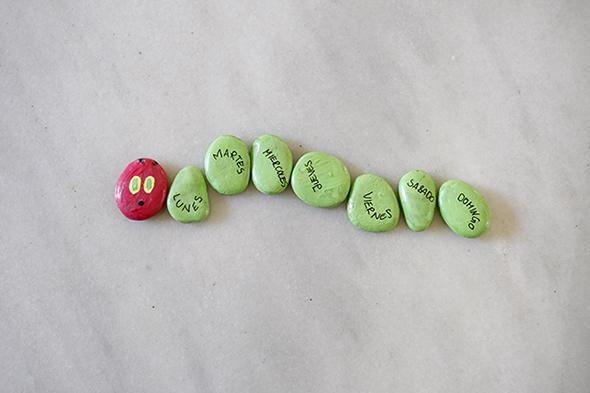
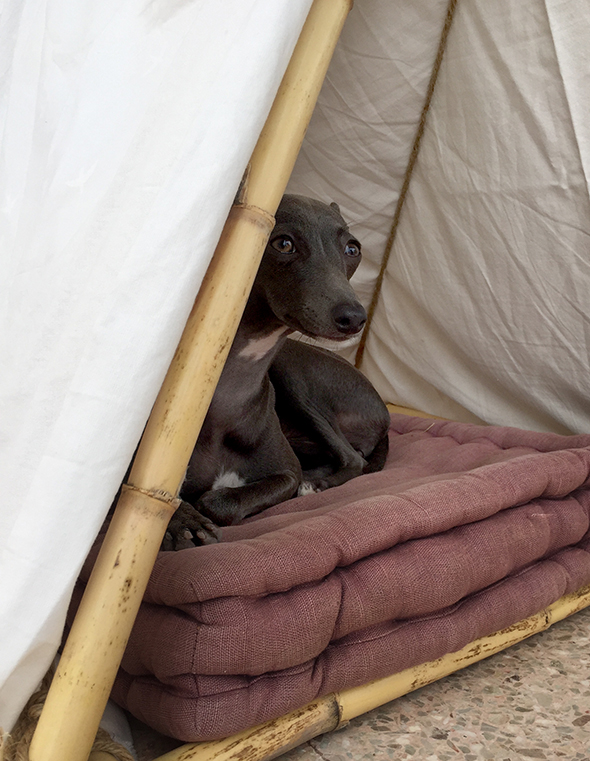

Hannah sells her brother.
Hannah vende su hermano.
Hannah verkauft ihren Bruder.
You may also like

Activity
Sonny angels vestidos / dressed / angezogen
Hannah and Sofia have dressed this Sonny Angels with balloons. It seems that they are wearing swimsuits. Hannah y Sofia han vestido a los sonny angels…
Read more →
Activity
Butterfly / Mariposa / Schmetterling
Hannah has snipped a butterfly for our neighbors. From an old magazine she has cut small monochrome snippets, and then she glued it on paper as…
Read more →
Activity
Relief / Relieve / Relief
With wood glue you can leave a relief, which only can be seen, if you paint the paper with color! Con cola de madera puedes dejar…
Read more →
Activity
The very Hungry Caterpillar / La oruga muy hambrienta / Die kleine Raupe Nimmersatt
The very Hungry Caterpillar. You can paint stones with finger paint. When the paint has dried you rub a little bit of wood glue over the…
Read more →
Activity
Dog house / Hundehütte / Caseta de perro
A small cottage made of bamboo, string and a piece of cloth. Protection against wind for small chilblains! ;-) Ein kleines Häuschen aus Bambus, Schnur und…
Read more →
Activity
Tree decoration / Decoración de árbol / Baumschmuck
Simple and edible tree decorations. Turn a wire into the desired shape. House, star, heart, tree .... Then you thread the beads of an eatable chain…
Read more →